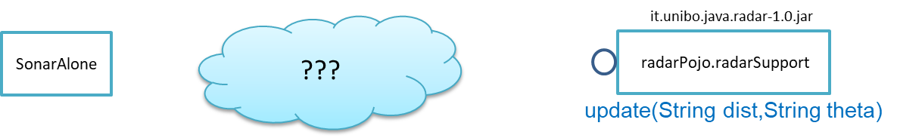
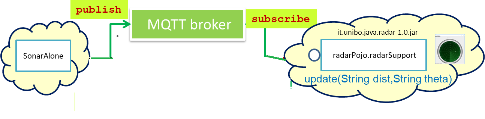
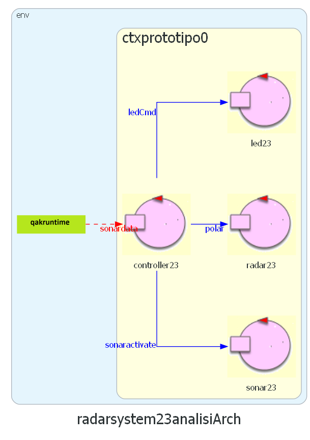

RadarSystem23¶
RadarSystem: Requisiti¶
Si desidera costruire un’applicazione software capace di:
(requisito radarGui) mostrare le distanze rilevate da un sensore Sonar
HC-SR04connesso a un RaspberryPi su un display (RadarDisplay) a forma di radar connesso a un PC.

(requisito ledAlarm) accendere un Led se la distanza rilevata dal Sonar è inferiore a un valore limite prefissato denominato
DLIMIT.
Fasi del lavoro¶
Vogliamo porre a confronto un possibile processo di produzione con Approccio bottom-up e un processo di produzione con Approccio top-down mediante modelli qak.
Approccio bottom-up¶
SPRINT0: Analisi dei Requisiti e Analisi del problema.
Modello ad oggetti dei dispositivi del dominio applicativo Dispositivi di input e di output.
Realizzazione del software per i dispositivi Dispositivi reali e Mock.
Realizzazione della logica applicativa: Il Controller. Prime prove in locala su PC<Il sistema in locale e poi Deployment su RaspberryPi
Approccio top-down¶
Impostiamo i macro-componenti come attori: ref:
Definiamo i messaggi per le interazioni tra i macro-componenti
Usiamo dispositivi Mock come Il SonarMock e Il LedMock per realizzare in tempi brevi un primo prototipo locale da discutere con il committente
Usiamo dispositivi concreti come Il SonarConcrete e distribuiamo parte del sistema su RaspberryPi, discutendo su dove sia più opportuno situare il Il Controller.
Analisi dei Requisiti¶
Iniziamo anallizzando il testo, cercando di chiarire con il committente il signifcato dei termini in esso presenti. Questa comunicazione a livello umano è fondamentale per formulare requisiti che siano:
Chiari, Corretti, Completi, Concisi
Non ambigui, consistenti
Tracciabili, Realizzabili, Collaudabili
Tracciabilità¶
Poichè il testo dei requisiti fornisce già un nome per ciascun requisito, si ha già un solido punto di partenza per la forward traceability.
User story¶
Una user-story che esprime il funzionamento atteso del sistema, catturando tutti i requisiti può essere così espressa:
User-story US1: come utente mi aspetto che il Led si accenda se pongo un ostacolo a distanza
d<DILIMTdal Sonar e che il Led si spenga non appena porto l’ostacolo ad una distanzad>DILIMT. In ogni caso posso vedere illuminarsi un punto sulRadarDisplaya distanzaddal centro lungo una retta che forma un angolo \(\theta\) rispetto all’asse orizzontale del display.
Piano di testing (funzionale)¶
La user-story precedente suggerisce anche un possibile test funzionale per la verifica del comportamento del software da sviluppare.
Tuttavia questo modo di procedere non è automatizzabile, in quanto richiede la presenza di un operatore umano. Nel seguito cercheremo di organizzare le cose in modo da permettere Test automatizzati.
Glossario¶
La redazione di un glossario è utile per pervenire alla definizione di Costumer requirements (C-requirements) chiari e possibilmente non ambigui. Il nostro glossario, la cui redazione lasciamo al lettore, dovrà includere i termini Sensore, Led, RadarDisplay che corrispondono ad altrettanti componenti del sistema.
In questa sede però, la nostra attenzione si rivolge alla possibilità/necessità di esprimere i requisiti ponendoci dal punto di vista dell’elaboratore, che (fortunatamente?!) non comprende il linguaggio naturale.
Dal punto di vista della ‘macchina’, l’unico modo per relazionarsi con un ente menzionato nel glossario è avere del software che lo rappresenta.
Poniamo dunque al committente anche domande da questo punto di vista, e altre domande volte a chiarire bene la natura del sistema da realizzare.
Domande al committente¶
Il committente fornisce software relativo al Led ? |
Si, led25GpioTurnOn.sh e led25GpioTurnOff.sh (progetto it.unibo.raspIntro2023) |
Il committente fornisce software per il Sonar ? |
Si, SonarAlone.c (progetto it.unibo.raspIntro2023) |
Il committente fornisce qualche libreria per la costruzione del RadarDisplay ? |
Si, viene reso disponibile (progetto it.unibo.java.radar) il supporto radarPojo.jar,
che fornisce un singleton JAVA public class radarSupport {
private static RadarControl rc;
public static void setUpRadarGui( ){
rc=...
}
public static void update(String d,
String dir){rc.update(d,dir);
}
}
|
Il LED può/deve essere connesso allo stesso RaspberryPi del sonar? |
Al momento si. In futuro però il LED potrebbe essere connesso a un diverso nodo di elaborazione. |
Il valore |
L’utente finale deve essere in grado di specificare in un ‘file di configurazione’ il valore di questa distanza. |
Dai requisiti possiamo asserire che:
si tratta di realizzare il software per un sistema distribuito costituito da due nodi di elaborazione: un RaspberryPi e un PC convenzionale;
i due nodi di elaborazione devono potersi scambiare informazione via rete, usando supporti WIFI;
i due nodi di elaborazione devono essere ‘programmati’ usando tecnologie software diverse.
In sintesi¶
Si tratta di realizzare un sistema software distribuito ed eterogeneo
Il sistema comprende un dispositivo di input (il Sonar) e due dispositivi di output (il Led e il RadarDisplay)
Prima di procedere alla analisi del problema, proviamo a vedere cosa potrebbe accadere se cercassimo di individuare subito una qualche soluzione, passando al HOW senza approfondire il WHAT (si ricordi SCRUM) e senza impostare la Progettazione e sviluppo come processo evolutivo.
Se non fosse distribuito …¶
Osserviamo che, in assenza del requisito radarGui, si potrebbe pensare di soddisfare il requisito ledAlarm introducendo una semplice modifica nel codice di SonarAlone.c .
Trattandosi di un programma C, la modifica potrebbe consistere nella introduzione di una funzione come la seguente:
void updateTheLed( int cm ) {
if( cm < DLIMIT ) digitalWrite(LED, HIGH);
else digitalWrite(LED, LOW);
}
Questa funzione andrebbe invocata ad ogni iterazione del ciclo principale nel main, come ad esempio in: LedSonar.c
(proposto in RaspBasicCode).
Il punto critico di questa impostazione è che la parte strutturale del sistema risulta ‘annegata’ nel programma che esprime il funzionamento. In particolare, i requisiti parlano di Led e Sonar, ma a questi dispositivi non corrisponde alcun codice specifico, gestibile in modo separato dal codice che realizza la logica applicativa.
Tutto funziona, ma le dimensioni architetturali relative alla struttura del sistema in termini di componenti e alla loro interazione non sono esplicitamente espresse.
Più strutturata da punto di vista architetturale è la Soluzione in Python basata su pipe che potrebbe essere rappresentata come segue:

Si veda: Soluzione in Python (in RaspBasicCode) Software lowlevel per il RadarSystem
Analisi del problema¶
Dopo l’analisi dei requisiti e i colloqui con il committente, possiamo riassumere la situazione elencando ciò che abbiamo e disposizione e le problematiche che si prospettano.
Gestione del sensore |
Il software fornito dal committente ( |
Realizzazione del |
A questo fine è disponibile il POJO realizzato da |
Gestione del Led. |
Il software fornito dal committente ( |
Quale assemblaggio? |

Occorre capire come i dati del sonar generati sul Raspberry possano raggiungere il PC ed essere usati per
aggiornare il |
{kind=link}
La necessità di integrare i componenti disponibili fa sorgere altre problematiche:
è opportuno incapsulare i componenti disponibli entro altri componenti capaci di interagire via rete? Una fonte di ispirazione in questo senso è il concetto di DigitalTwin;
dove è più opportuno inserire la ‘businenss logic’? In un oggetto che estende il sonar o il
radarSupport? Oppure è meglio introdurre un terzo componente?quale forma di interazione è più opportuna? diretta/mediata, sincrona/asincrona?.
Focalizzando l’attenzione sul requisito RadarGui e quindi sulla interazione sonar-radar (per il Led valgono considerazioni analoghe) possiamo rappresentare la situazione come segue:
Comunicazione diretta Le ‘nuvolette’ in figura rappresentano gli strati di software che permettono ai dati generati dal Sonar
di eseere ricevuti dal |

|
Comunicazione mediata Richiede la presenza di un componente mediatore (broker), di solito realizzato da terze parti
come servizio disponibile in rete. Un generatore di dati (come il Sonar) pubblica informazione
su una topic del broker; tale informazione
che potrebbe essere ricevuta (‘osservata’) da uno o più ricevitori (come il |
 |
{kind=link}
Chi realizza la logica applicativa?¶
Seguendo il Principio di singola responsabilità (e un pò di buon senso) la realizzazione degli use-cases applicativi non deve essere attribuita al software di gestione dei dispositivi di I/O.
Dunque, la nostra analisi ci induce a sostenere
l’opportunità di introdurre un nuovo componente (che possiamo denominare Controller), che abbia la
responsabilità di realizzare la logica applicativa.
Il Controller deve ricevere in ingresso i dati del sensore HC-SR04, elaborarli e
inviare comandi al Led e dati al RadarDisplay.
Ma ecco sorgere un’altra problematica legata alla distribuzione:
Il
Controllerpuò risiedere su RaspberryPi, sul PC o su un terzo nodo. Tuttavia, il committente ha escluso (per motivi di costo) la possibilità di introdurre un altro nodo di elaborazione.La presenza di un broker in forme di comunicazione mediata potrebbe indurci ad attribuire responsabilità applicative al mediatore. Ma è giusto/opportuno procedere i questo modo?
Dunque si tratta di analizzare dove sia meglio allocare il Controller :
|
Si avrebbe una maggior reattività nella accensione del Led in caso di allarme. Inoltre … |
|
Si avrebbe più facilità nel modificare la logica applicativa, lasciando al Raspberry solo la responsabilità di gestire dispositivi. Inoltre … |
|
Questa possibilità introduce l’idea di Architetture distribuite space-based. |
Dispositivi di input e di output¶
Concettualmente, il Sonar è un dispositivo di input e il Led e il RadarDisplay sono dispositivi di output.
In generale, nella programmazione ad oggetti, per utilizzare un dispositivo di output è sufficiente invocare un metodo, mentre l’uso di un dispositivo di input presenta due modalità principali:
il componente interessato ai dati prodotti dal dispostivo di input, ne invoca un metodo ‘bloccante’ (ad esempio
read()) che fornisce un dato non appena disponibile. Questo modo di procedere prende anche il nome di interazione a polling;il componente consumatore dei dati si relaziona con dispostivo di input seccondo il pattern observer.
Modello ad oggetti del dominio¶
I modelli iniziali dei componenti descritti da interfacce Java per il Led, il Sonar e il RadarDisplay costuiscono il nostro attuale modello del dominio. Ispirandoci agli schemi port-adapter e clean-architecture:
il modello del dominio sarà al centro della architettura del sistema
il software relativo dominio sarà scritto in un progetto dedicato
it.unibo.radarSystem22.domain //che produce
it.unibo.radarSystem22.domain-1.0.jar
il software dell’applicazione sarà scritto in un progetto dedicato
it.unibo.radarSystem23
Per facilitare la costruzione di dispositivi senza dover denotare in modo esplicito le classi di implementazione, conviene introdurre una Factory:
DeviceFactory¶
public class DeviceFactory {
public static ILed createLed() { ... }
public static ISonar createSonar() { ... }
public static IRadarGui createRadarGui() { ... }
}
DomainSystemConfig.json¶
Ciascun metodo di DeviceFactory restitusce una istanza di dispositivo reale o Mock in accordo alle specifiche
contenute in un file di Configurazione (DomainSystemConfig.json) che qui ipotizziamo scritto in JSon:
{
"simulation" : "true",
...
}
DomainSystemConfig.java¶
Questo file di configurazione viene letto dal metodo setTheConfiguration di un singleton DomainSystemConfig
che inizializza variabili static accessibili all’applicazione:
public class DomainSystemConfig {
public static boolean simulation; //set by setTheConfiguration
...
public static void setTheConfiguration( String resourceName ) {
...
fis = new FileInputStream(new File(resourceName));
JSONTokener tokener = new JSONTokener(fis);
JSONObject object = new JSONObject(tokener);
simulation = object.getBoolean("simulation");
...
}
}
Le interfacce ILed e IRadarDisplay¶
Led |
RadarDisplay |
public interface ILed {
public void turnOn();
public void turnOff();
public boolean getState();
}
|
public interface IRadarDisplay{
public void update(String d, String a);
}
|
Le interfacce IDistance e ISonar¶
Distance |
Sonar |
public interface IDistance {
public int getVal( );
public String toString( );
}
|
public interface ISonar {
public void activate();
public void deactivate();
public IDistance getDistance();
public boolean isActive();
}
|
In quanto dispositivo-generatore di dati, ISonar offre metodi per attivare/disattivare il dispositivo e il
metodo getDistance per fornire il valore corrente di distanza misurata.
La interfaccia IDistance è introdotta per reppresentare il concetto di distanza, in modo
da non appiattire questo concetto su un tipo predefinito, come int. Notiamo che, come per
tutti i valori numerici, non vi sono metodi per modificare una distanza,
ma solo metodi per fornirne una rappresentazione in termini di tipi primitivi, tra cui mettiamo in evidenza
il metodo che fornisce una rappresentazione in termini di String.
Notiamo invece che, per il Led, abbiamo ‘ridotto’ il concetto di stato del Led al
tipo predefinito boolean in quanto questo tipo di dato è aderente alla logica del problema.
Architettura logica del sistema¶
La architettura logica suggerita dal problema è rappresentabile con la figura che segue:

Non vi sono (al momento) situazioni di uso concorrente di risorse.
La logica del Controller¶
A questo punto possiamo anche esprimere il funzionamento logico del Controller come segue:
ISonar sonar;
ILed led;
IRadarDisplay radar;
...
while( sonar.isactive() ){
IDistance d = sonar.getDistance(); //Acquisizione di un dato dal sonar
if( d.getDistance().getVal()) < DLIMIT ) //Elaborazione del dato
Led.turnOn() else Led.turnOff //Gestione del Led
radar.update( ""+d.getDistance().getVal(), "90") //Visualizzazione su RadarDisplay
}
Il come avviene l’interazione tra le parti relativa alla acquisizione dei dati e all’invio dei comandi
non è specificato al momento.
Come analisti del problema possiamo però evidenziare che il Controller
può acquisire i dati del Sonar in modi diversi:
inviando una richiesa al Sonar, che gli fornisce un dato come risposta;
agendo come un componente observer di un Sonar observable;
agendo com un subscriber su una topic di un broker su cui il Sonar pubblica i suoi dati.
Questo modello sembra portare intrinsecamente in sè l’idea di una classica applicazione ad oggetti che deve essere eseguita su un singolo elaboratore (o una singola Java virtual machine). Ma forse non è proprio così.
Dagli oggetti alla distribuzione: i design patterns¶
Il fatto di avere espresso il Controller con riferimento a interfacce e non ad oggetti concreti,
significa che il progettista si può avvalere di appropriati design pattern per
implementare i componenti in modo che possano scambiare informazione via rete.
Il Proxy può essere utilizzato per accedere ad un un oggetto complesso tramite un oggetto semplice o quando si desidera nascondere il fatto che si sta chiamando un servizio remoto.
Il Decorator (anche chiamato ‘Smart Proxy’) viene utilizzato quando si desidera aggiungere funzionalità a un oggetto, senza usare l’ereditarietà.
L’Adapter viene utilizzato quando si desidera mappare un oggetto con una certa interfaccia su un altro oggetto che ha un ruolo funzionale simile, ma interfaccia diversa.
Il Bridge è molto simile a Adapter, ma definisce sia l’interfaccia che l’implementazione sottostante.
La Facade è un’interfaccia di livello superiore (più semplice) per un sottosistema di una o più classi.
Il Singleton evita di creare più di una istanza di una classe e può risultare utile per creare supporti alla comunicazione.
Nel nostro lavoro, lo scambio di infromazioni via rete può anche essere basato su:
nuovi supporti custom che realizzano (nel progetto ) l’astrazione Interaction;
(meta)modelli di sistemi basati su attori che hanno le comunicazioni a messaggi nel loro ‘codice genetico’.
Progettazione¶
Dispositivi reali e Mock¶
Per essere certi che un dispositivo Mock possa essere un sostituto efficace di un dispositivo reale, introduciamo per ogni dispositivo una classe astratta comune alle due tipologie, che funga anche da Factory specifica per quel tipo di dispositivo.
Partiamo ovviamente tenendo conto delle specifiche sulle interfacce introdotte in fase di analisi: Modello ad oggetti del dominio.
Il Led¶
Un Led è un dispositivo di output che può essere modellato e gestito realizzando i metodi di ILed
(vedi ILed) come getter/setter di uno stato interno.
La classe astratta LedModel¶
La classe astratta relativa al Led introduce un metodo abstract denominato ledActivate
cui è demandata la responsabilità di accendere/spegnere il Led.
public abstract class LedModel implements ILed{
private boolean state = false;
//Factory methods
public static ILed create() {
ILed led;
if( DomainSystemConfig.simulation ) led = createLedMock();
else led = createLedConcrete();
}
public static ILed createLedMock(){return new LedMock(); }
public static ILed createLedConcrete(){return new LedConcrete();}
//Abstract methods
protected abstract void ledActivate( boolean val);
protected void setState( boolean val ) {
state = val;
ledActivate( state );
}
@Override
public void turnOn(){ setState( true ); }
@Override
public void turnOff() { setState( false ); }
@Override
public boolean getState(){ return state; }
}
La variabile locale booleana state viene posta a true quando il Led è acceso.
Il LedMock¶
In pratica il LedModel è già un LedMock, in quanto tiene traccia dello stato corrente nella variabile
state.
Poichè il metodo ledActivate ha la responsabilità di definire il codice specifico per
accedendere/spegnere il Led, a livello di Mock possiamo rendere visibile lo stato del Led
sullo standard output.
public class LedMock extends LedModel implements ILed{
@Override
protected void ledActivate(boolean val) { showState(); }
protected void showState(){
ColorsOut.outappl("LedMock state=" + getState(), ColorsOut.MAGENTA );
}
}
Una implementazione più user-friendly potrebbe
introdurre una GUI che cambia di colore e/o dimensione a seconda che il Led sia acceso o spento.
A questo scopo introduciamo anche la classe LedMockWithGui, il cui codice è lasciato al lettore.
Il LedConcrete¶
Il componente che realizza la gestione di un Led concreto, connesso a un RaspberryPi, si può avvalere del software reso disponibile dal committente:
public class LedConcrete extends LedModel implements ILed{
private Runtime rt = Runtime.getRuntime();
@Override
protected void ledActivate(boolean val) {
try {
if( val ) rt.exec( "sudo bash led25GpioTurnOn.sh" );
else rt.exec( "sudo bash led25GpioTurnOff.sh" );
} catch (IOException e) { ... }
}
}
Testing del dispositivo Led¶
Un test automatizzato di tipo Unit-test (si veda Il testing) sul Led può essere espresso usando JUnit come segue:
public class TestLed {
@Before
public void up(){ System.out.println("up"); }
@After
public void down(){ System.out.println("down"); }
@Test
public void testLedMock() {
DomainSystemConfig.simulation = true;
ILed led = DeviceFactory.createLed();
assertTrue( ! led.getState() );
led.turnOn();
assertTrue( led.getState() );
Utils.delay(1000); //to see the ledgui
led.turnOff();
assertTrue( ! led.getState() );
Utils.delay(1000); //to see the ledgui
}
}
Un test sul LedConcrete ha la stessa struttura del test sul LedMock, ma bisogna avere l’avvertenza
di eseguirlo sul RaspberryPi. Eseguendo il test sul PC non vengono segnalati errori (in quanto
il Led ‘funziona’ da un punto di vista logico) ma compaiono messaggi del tipo:
LedConcrete | ERROR Cannot run program "sudo": ...
Il Sonar¶
Un Sonar è un dispositivo di input che deve fornire dati, in modo autonomo o quando richiesto dalla applicazione.
Il software fornito dal committente per l’uso di un Sonar reale HC-SR04 introduce
logicamente un componente attivo, che produce sul dispositivo standard di output,
con una certa frequenza, una sequenza di valori (interi) di distanza.
Nella nostra analisi, invece, il Sonar è un dispositivo produttore di dati di tipo
IDistance (si veda: Le interfacce IDistance e ISonar).
La modellazione di un componente produttore di dati è più complicata di quella di un dispositivo di output in quanto occorre affrontare un classico problema produttore-consumatore.
La classe astratta SonarModel¶
La classe astratta relativa al Sonar introduce due metodi abstract, uno per specificare il modo di inizializzare il sonar
(metodo sonarSetUp) e uno per specificare il modo di produzione dei dati (metodo sonarProduce).
Inoltre, essa definisce due metodi create che costituiscono Factory-methods per un sonar Mock e un sonar reale.
public abstract class SonarModel implements ISonar{
protected boolean stopped = false; //se true il sonar si ferma
protected IDistance curVal = new Distance(90);
//Factory methods
public static ISonar create() {
if( DomainSystemConfig.simulation ) return createSonarMock();
else return createSonarConcrete();
}
protected SonarModel() { //hidden costructor, to force setup
sonarSetUp();
}
public static ISonar createSonarMock(){return new SonarMock();}
public static ISonar createSonarConcrete(){return new SonarConcrete();}
Il Sonar viene modellato come un processo che produce dati di un tipo che potrebbe essere:
int: è il tipo di dato prodotto dal core-code del Sonar;
String: come rappresentazione del valore ;
IDistance: è il tipo di dato prodotto dal Sonar a livello logico, come espresso dalla interfaccia ISonar.
Poichè i consumtori si aspettano valori di distanza, siamo qui indotti ad optare per la terza opzione
IDistance. Tuttavia, motivi di efficienza potrebbero farci optare per la prima e
motivi di flessibilità e di interoperabilità per la seconda.
La classe Distance¶
La classe che implementa IDistance viene definita come segue:
public class Distance implements IDistance{
private int v;
public Distance(int d) { v=d; }
@Override
public int getVal() { return v; }
@Override
public String toString(){ return ""+v; }
}
Ricordiamo che l’interfaccia IDistance non prevede metodi per modificare un dato di questo tipo, una volta creato.
La produzione dei dati¶
Il codice relativo alla produzione dei dati viene incapsulato in un metodo abstract sonarProduce
che dovrà essere definito in modo diverso da un SonarMock e un SonarConcrete, così come il
metodo di inizializzazione sonarSetUp:
//Abstract methods
protected abstract void sonarSetUp() ;
protected abstract void sonarProduce( );
Il processo di produzione risulta attivo quando la variabile locale stopped è true.
Di qui le seguenti definizioni:
@Override
public void deactivate() { stopped = true; }
@Override
public boolean isActive() { return ! stopped; }
Con queste premesse, il metodo activate deve
attivare un Thread interno di produzione di dati:
@Override
public void activate() {
stopped = false;
new Thread() {
public void run() {
while( ! stopped ) { sonarProduce(); }
}
}.start();
}
La parte applicativa che funge da consumatore dei dati prodotti dal Sonar dovrà invocare il metodo
geDistance che viene definito in modo da restituire il valore corrente prodotto da Sonar:
@Override
public IDistance getDistance() {
return curVal;
}
La variabile curVal dovrebbe essere logicamente protetta da un meccanismo di mutua esclusione.
Tuttavia i dati sono in continuo aggiornamento e l’eventuale lettura di un valore non completamente modificato
non è qui un problema.
Il SonarMock¶
Un Mock-sonar che produce valori di distanza da 90 a 0 può quindi ora essere definito come segue:
public class SonarMock extends SonarModel implements ISonar{
private int delta = 1;
@Override
protected void sonarSetUp(){ curVal = new Distance(90); }
@Override
protected void sonarProduce() {
if( DomainSystemConfig.testing ) {
updateDistance( DomainSystemConfig.testingDistance );
stopped = true; //one shot
}else {
int v = curVal.getVal() - delta;
updateDistance( v );
stopped = ( v <= 0 );
Utils.delay(DomainSystemConfig.sonarDelay); //avoid fast generation
}
}
Si noti che:
viene definito un nuovo parametro di configurazione
testingche, quandotrue, denota che il sonar sta lavorando in una fase di testing, per cui produce un solo valore dato dal parametrotestingDistance. Ciò al fine di controllare il Sonar come emettitore di un dato noto.viene definito un nuovo parametro di configurazione
DLIMITper permettere il setting ditestingDistancein funzione di un valore prefissato (si veda Testing del dispositivo Sonar).viene definito un nuovo parametro di configurazione
sonarDelayper un rallentamento della frequenza di generazione dei dati.
Il file DomainSystemConfig.json si arricchisce di specifiche:
{
"simulation" : "true",
...
"DLIMIT" : "15",
"testing" : "false"
"testingDistance" : "10" ,
"sonarDelay" : "100"
"sonarDistanceMax" : "150"
}
Il SonarConcrete¶
Il componente che realizza la gestione di un Sonar concreto, connesso a un RaspberryPi,
si può avvalere del programma SonarAlone.c fornito dal committente.
public class SonarConcrete extends SonarModel implements ISonar{
private Process p ;
private BufferedReader reader ;
@Override
protected void sonarSetUp() {
curVal = new Distance(90);
}
@Override
public void activate() {
if( p == null ) {
try {
p=Runtime.getRuntime().exec("sudo ./SonarAlone");
reader=new BufferedReader( new InputStreamReader(p.getInputStream()));
}catch( Exception e) { ... }
}
super.activate();
}
protected void sonarProduce() {
try {
String data = reader.readLine();
if( data == null ) return;
int v = Integer.parseInt(data);
int lastSonarVal = curVal.getVal();
//Eliminiamo dati del tipo 3430
if( lastSonarVal != v && v < DomainSystemConfig.sonarDistanceMax) {
updateDistance( v );
}
}catch( Exception e) { ... }
}
@Override
public void deactivate() {
curVal = new Distance(90);
if( p != null ) {
p.destroy();
p=null;
}
super.deactivate();
}
}
Testing del dispositivo Sonar¶
Il testing di un sonar riguarda due aspetti distinti:
il test sul corretto funzionamento del dispositivo in quanto tale. Supponendo di porre di fronte al Sonar un ostacolo a distanza \(D\), il Sonar deve emettere dati di valore \(D \pm \epsilon\).
il test sul corretto funzionamento del componente software responsabile della trasformazione del dispositivo in un produttore di dati consumabili da un altro componente.
Ovviamente qui ci dobbiamo occupare della seconda parte, supponendo che la prima sia soddisfatta. A tal fine possiamo procedere come segue:
per il SonardMock, poichè siamo noi a generare la sequenza di valori, possiamo verificare che un unico consumatore riceva dal metodo
getDistancei valori nella giusta sequenza;per il SonarConcrete, poniamo uno schermo a distanza prefissata \(D\) e verifichiamo che un consumatore riceva dal metodo
getDistancevalori \(D \pm \epsilon\).
Un processo consumatore di dati emessi dal sonar può essere definito verificando l’aspettativa di ricevere dati nell’intervallo di confidenza stabilito:
class SonarConsumerForTesting extends Thread{
private ISonar sonar;
private int delta;
public SonarConsumerForTesting( ISonar sonar, int delta) {
this.sonar = sonar;
this.delta = delta;
}
@Override
public void run() {
int v0 = sonar.getDistance().getVal();
while( sonar.isActive() ) {
BasicUtils.delay(DomainSystemConfig.sonarDelay/2); //non perdere dati
IDistance d = sonar.getDistance();
int v = d.getVal();
int vexpectedMin = v0-delta;
int vexpectedMax = v0+delta;
assertTrue( v <= vexpectedMax && v >= vexpectedMin );
v0 = v;
}
}
}
Una TestUnit automatizzata per il SonarMock può essere quindi definita in JUnit come segue:
@Test
public void testSonarMock() {
DomainSystemConfig.simulation = true;
DomainSystemConfig.sonarDelay = 10; //quite fast generation...
int delta = 1;
ISonar sonar = DeviceFactory.createSonar();
new SonarConsumerForTesting( sonar, delta ).start();
sonar.activate();
while( sonar.isActive() ) {Utils.delay(100);} //avoid premature exit
}
Una TestUnit per il SonarConcrete è simile, una volta fissato il valore \(delta=\epsilon\)
di varianza sulla distanza-base.
Il Controller¶
Il componente che realizza la logica applicativa in ambiente locale con dispositivi Mock o concreti può essere definito partendo dal modello introdotto nella fase di analisi (La logica del Controller) , attivando un Thread che realizza lo schema read-eval-print.
public class Controller {
private ILed led;
private ISonar sonar;
private IRadarDisplay radar;
private ActionFunction endFun;
//Factory method
public static Controller create(
ILed led, ISonar sonar,IRadarDisplay radar) {
return new Controller( led, sonar, radar );
}
//Constructor
private Controller( ILed led, ISonar sonar,IRadarDisplay radar) {
this.led = led;
this.sonar = sonar;
this.radar = radar;
}
public void start( ActionFunction endFun, int limit ) {
this.endFun = endFun;
sonar.activate( limit );
activate( limit );
}
Il Controller riceve in ingresso i (riferimenti ai) componenti del sistema e può essere attivato
invocando il metodo start il cui argomento limit fissa un limite massimo al numero delle iterazioni.
Azioni di fine lavoro¶
Il primo argomento (endFun) del metodo start del Controller è una funzione di callback
che implementa la seguente interfaccia:
public interface ActionFunction {
void run(String result);
}
Una funzione di questo tipo verrà invocata al termine delle attività del Controller, che si presenta come un oggetto attivo.
Poichè vale che:
la funzione di callback è una chiusura lessicale sul chiamante
l’invocazione della funzione permette al chiamante della operazione start di utilizzare nel suo contesto computazionale
eventuali risultati prodotti dal controller, quando questi termina l’esecuzione. Si noti però che questa attività verrà
svolta nel Thread del Controller.
Il funzionamento del Controller¶
Il metodo start attiva il Sonar e lancia un Thread interno di lavoro.
protected void activate( int limit ) {
new Thread() {
public void run() {
try {
sonar.activate();
//while( sonarActive() ) {
if( sonar.isActive() ) {
for( int i=1; i<=limit; i++) { //meglio per il testing
IDistance d = sonar.getDistance();
if( radar != null) RadarGuiUsecase.doUseCase(radar,d);
LedAlarmUsecase.doUseCase( led, d );
}
}
sonar.deactivate();
endFun.run("Controller | BYE ");//CALLBACK
} catch (Exception e) { ... }
}
}.start();
}
}
Si noti che il Controller realizza ciascun requisito invocando uno specifico componente (RadarGuiUsecase e LedAlarmUsecase).
Logicamente, la computazione prosegue fintanto che il Sonar è attivo; tuttavia, la messa a punto del sistema (e il testing) può essere agevolato limitando a priori il numero di iterazioni.
Notiamo anche che il Controller evita (al momento) di realizzare il requisito radarGui
(si veda requirements) se riceve in ingresso un riferimento nullo al RadarDisplay.
LedAlarmUsecase¶
public class LedAlarmUsecase {
public static void doUseCase(ILed led, IDistance d) {
try {
if( d.getVal() < DomainSystemConfig.DLIMIT ) led.turnOn();
else led.turnOff();
} catch (Exception e) { ... }
}
}
RadarGuiUsecase¶
public class RadarGuiUsecase {
public static void doUseCase( IRadarDisplay radar, IDistance d ) {
radar.update(""+d.getVal(), "90");
}
}
Il sistema in locale¶
La prima, semplice versione del sistema da eseguire e testare lavora su un singolo computer (PC o Raspberry) con dispositivi simulati o (nel caso di Raspberry) reali.
public class RadarSystemSprint1Main implements IApplication{
private ISonar sonar = null;
private ILed led = null;
private IRadarDisplay radar = null;
private Controller controller;
@Override
public String getName(){ return this.getClass().getName(); }
@Override
public void doJob(String domainConfig, String systemConfig) {
setup(domainConfig, systemConfig);
configure();
ActionFunction endFun = (n) -> {
System.out.println(n);
terminate();
};
//start
controller.start(endFun, 30);
}
public void terminate() {
BasicUtils.aboutThreads("Before deactivation | ");
sonar.deactivate();
System.exit(0);
}
...
public static void main( String[] args) throws Exception {
new RadarSystemSprint1Main().doJob(null,null); //su
/*
//su Rasp:
new RadarSystemSprint1Main().doJob(
"DomainSystemConfig.json","RadarSystemSprint1Main");
*/
}
L’interfaccia IApplication¶
Poichè dovremo realizzare diverse versioni/configurazioni del sistema, sia in locale sia in distribuito, introduciamo qui il vincolo che ciascuna delle versioni del sistema dovrà implementare l’interfaccia che segue.
public interface IApplication {
public void doJob(String configFileName, String systemConfig);
public String getName();
}
Ogni versione del sistema dovrà duque fornire un nome (con cui potrà essere selezionata) e un metodo doJob
che riceve in ingresso il file di configurazione del dominio e il file di configurazione del sistema.
Viena anche defiito un programma che offre ad un utente un elenco di nomi di applicazioni da cui l’utente può scegliere per attivarne una.
Fase di setup¶
Il metodo setup del Main applicativo fissa i parametri di configurazione leggendo i file di configurazione
oppure assegnando loro un valore a livello di programma.
Osserviamo che:
Quando attiaviamo il sistema su PC usando un IDE (Eclipse o IntelliJ), conviene fissare i parametri di configurazione all’interno del codice.
Quando attiviamo il sistema su Raspberry usando come distribuzione un file
jar, conviene fissare i parametri di configurazione utilizzando il fileDomainSystemConfig.json.
public class RadarSystemSprint1Main implements IApplication{
public void setup(String domainConfig,String systemConfig ) {
if( domainConfig != null ){
DomainSystemConfig.setTheConfiguration(domainConfig);
}if( systemConfig != null ) {
RadarSystemConfig.setTheConfiguration(systemConfig);
}
if( domainConfig == null && systemConfig == null) {
DomainSystemConfig.testing = false;
DomainSystemConfig.sonarDelay = 200;
//Su PC
DomainSystemConfig.simulation = true;
DomainSystemConfig.DLIMIT = 70;
DomainSystemConfig.ledGui = true;
RadarSystemConfig.RadarGuiRemote = false;
//Su Raspberry (nei files di configurazione)
//DomainSystemConfig.simulation = false;
//DomainSystemConfig.DLIMIT = 12;
//DomainSystemConfig.ledGui = false;
//RadarSystemConfig.RadarGuiRemote = true;
}
}//setup
...
}//RadarSystemMainLocal
Fase di configurazione¶
Il metodo configure crea i dispositivi simulati concreti a seconda dei parametri di
configurazione.
protected void configure() {
//Dispositivi di Input
sonar = DeviceFactory.createSonar();
//Dispositivi di Output
led = DeviceFactory.createLed();
radar = RadarSystemConfig.RadarGuiRemote ?
null : DeviceFactory.createRadarGui();
BasicUtils.aboutThreads("Before Controller creation | ");
//Controller
ActionFunction endFun = (n) -> { System.out.println(n); terminate(); };
controller = Controller.create(led, sonar, radar );
}
Utilità per il testing¶
Inseriamo nel main program metodi che restitusicono un riferimento ai componenti del sistema, in modo da poterne referenziare le proprietà durante il testing automatizzato:
public class RadarSystemMainLocal {
...
public IRadarDisplay getRadarGui() { return radar; }
public ILed getLed() { return led; }
public ISonar getSonar() { return sonar; }
public Controller getController() { return controller; }
}
Testing (su PC)¶
La testUnit introduce un metodo di setup per definire i parametri di configurazione (in modo da non dipendere da files esterni) e per costruire il sistema.
public class TestSystemAtSprint1 {
private RadarSystemMainLocal sys;
@Before
public void setUp() {
System.out.println("setUp");
try {
sys = new RadarSystemSprint1Main();
sys.setup(null,null);//non usiamo i files di config
sys.configure();
DomainSystemConfig.testing = true;
} catch (Exception e) {
fail("setup ERROR " + e.getMessage() );
}
}
Come anticipato in fase di analisi dei requisiti, impostiamo un test nel caso in cui
il Sonar produca un valore d>DLIMIT e un altro test per il Sonar che produce un valore d<DLIMIT.
@Test
public void testFarDistance() {
DomainSystemConfig.testingDistance = DomainSystemConfig.DLIMIT + 20;
testTheDistance( false );
}
@Test
public void testNearDistance() {
DomainSystemConfig.testingDistance = DomainSystemConfig.DLIMIT - 5;
testTheDistance( true );
}
protected void testTheDistance( boolean ledStateExpected ) {
RadarDisplay radar = RadarDisplay.getRadarDisplay(); //singleton
ActionFunction endFun = (n) -> { //eseguita quando il Controller termina
System.out.println(n);
boolean ledState = sys.getLed().getState();
int radarDisplayedDistance = radar.getCurDistance();
assertTrue( ledState == ledStateExpected
&& radarDisplayedDistance == DomainSystemConfig.testingDistance);
};
sys.getController().start( endFun, 1 ); //one-shot
Utils.delay(1000) ; //give time to work ...
}
Deployment su RaspberryPi¶
Per fare il deployment del sistema su RaspberryPi ed eseguire l’applicazione Il sistema in locale dobbiamo eseguire quanto riportato qui di seguito:
Impostazione del main file in
build.gradlemainClassName = 'it.unibo.radarSystem23.sprint1.RadarSystemSprint1Main'
Creazione del file di distribuzione
gradle distZip -x test
Trasferimento del file
it.unibo.radarSystem23-1.0.zipsu RaspberryPi e unzipping.Posizionamento nella directory di lavoro:
it.unibo.radarSystem23-1.0/bin.Copia nella directory di lavoro del codice richiesto per l’uso dei dispositivi concreti.
Impostazione dei parametri di configurazione nel file
DomainSystemConfig.jsoneRadarSystemConfig.jsoncopiati nella directory di lavoro.Esecuzione di
./it.unibo.radarSystem23-1.0
Progetti unibo.radarqak23 e it.unibo.raspIntro2023.
radarsystem23analisi.qak¶
{kind=link}
System radarsystem23analisi
Dispatch sonaractivate : info(ARG) //
Dispatch sonardeactivate : info(ARG)
Dispatch ledCmd : ledCmd(ONOFF)
Dispatch polar : polar(D,A)
Event sonardata : distance( V )
//Context ctxrasp ip [host="192.168.1.xxx" port=8086] //Raspberry
//Context ctxpc ip [host="192.168.1.yyy" port=8088] //PC
Context ctxprototipo0 ip [host="localhost" port=8088] //PC
//TODO: sviluppare sonarqak23 e usarlo come CodedActor o come ExternalActor
QActor sonar23 context ctxprototipo0{ //ctxrasp{
[# var goon = true #]
State s0 initial{
println("${name} STARTS ")
}
Transition t0 whenMsg sonaractivate -> doActivate
whenMsg sonardeactivate -> doDeactivate
State doActivate{
//emit sonardata : distance( D )
[# var D = 50
for( i in 1..5){
CommUtils.outyellow( "${name} simulates $D")
emit( "sonardata", "distance( $D )" )
delay(500)
D = D - 5
}
for( i in 1..5){
CommUtils.outyellow( "${name} simulates $D")
emit( "sonardata", "distance( $D )" )
delay(500)
D = D + 5
}
#]
}
State doDeactivate{
println("${name} ENDS ")
}
}
QActor led23 context ctxprototipo0{ //ctxrasp{
State s0 initial{
println("${name} STARTS")
}
Transition t0 whenMsg ledCmd -> doCmd
State doCmd{
//printCurrentMessage
onMsg( ledCmd : ledCmd(V) ){
[# var Cmd = payloadArg(0) #]
if [# Cmd=="on" #]{
println("${name} - on") color magenta
}else{
println("${name} - off") color magenta
}
}
}
Transition t0 whenMsg ledCmd -> doCmd
}
QActor radar23 context ctxprototipo0{ //ctxpc{
State s0 initial{
println("${name} STARTS")
}
Transition t0 whenMsg polar -> showDataOnGui
State showDataOnGui{
onMsg( polar : polar(D,A)){
[# var D = payloadArg(0)
var A = payloadArg(1)
#]
println("RADARGUI : $D/$A") color green
}
}
Transition t0 whenMsg polar -> showDataOnGui
}
QActor controller23 context ctxprototipo0{ //ctxpc{
[# val DLIMIT = 30 #]
State s0 initial{
println("${name} STARTS - Activates the sonar")
forward sonar23 -m sonaractivate : info(ok)
}
Transition t0 whenEvent sonardata -> doBusinessWork
State doBusinessWork{
//printCurrentMessage
onMsg( sonardata : distance(D)){
[# var D = payloadArg(0).toInt() #]
//Interact with the Radar
forward radar23 -m polar : polar( $D, 90)
//Interact with the Led
if [# D <= DLIMIT #]{
//println("${name} - Turn the Led on")
forward led23 -m ledCmd : ledCmd(on)
}else{ //TODO in the project: if Led is on ....
//println("${name} - Turn the Led off")
forward led23 -m ledCmd : ledCmd(off)
}
}
}
Transition t0 whenEvent sonardata -> doBusinessWork
}
Il radar viene incapasulato in un attore.
radargui23.qak¶
System radargui23
/*
*polar:polar(D,A) can be perceived as a dispatch, as a request or as an event
*/
Request polar : polar(D,A)
Reply fromRadarGui : fromRadarGui(X)
Dispatch polar : polar(D,A)
Event polar : polar(D,A)
Event sonardata : distance( V ) //for the application level 2022
Context ctxradargui ip [ host= "localhost" port= 8038 ]
/*
* -----------------------------------------------------------
* Embeds the radarpojo and provides message-based interaction
* (it is the 'exoskeleton - decorator')
* -----------------------------------------------------------
*/
QActor radargui context ctxradargui{
[# var DoReply = false
var DistanceStr = "0"
var Distance = 0
var Angle = "0"
#]
State s0 initial{
println("radargui start")
run radarPojo.radarSupport.setUpRadarGui()
}
Goto waitForDataToShow
State waitForDataToShow{
println("radargui waiting ... ")
}
Transition t0
whenRequest polar -> showSpotReply
whenMsg polar -> showSpotNoReply
whenEvent polar -> showSpotNoReply
whenEvent sonardata -> showSpot2022
//WARNING: the current message is lost after an empty-move
State showSpotNoReply{
//printCurrentMessage
onMsg( polar : polar(D,A) ) {
[#
DistanceStr = payloadArg(0)
Distance = DistanceStr.toInt()
Angle = payloadArg(1)
DoReply = false
#]
}
}
Goto showSpot
State showSpotReply{
//printCurrentMessage
onMsg( polar : polar(D,A) ) {
[#
DistanceStr = payloadArg(0)
Distance = DistanceStr.toInt()
Angle = payloadArg(1)
DoReply = true
#]
}
}
Goto showSpot
State showSpot{
if [# Distance <= 90 #] {
run radarPojo.radarSupport.update( DistanceStr, Angle )
if [# DoReply #] { replyTo polar with fromRadarGui : fromRadarGui( done($DistanceStr) ) }
}
}
Goto waitForDataToShow
State showSpot2023{
printCurrentMessage
onMsg( sonardata : distance(D) ) {
[# DistanceStr = payloadArg(0); Distance = DistanceStr.toInt() #]
if [# Distance <= 90 #] {
run radarPojo.radarSupport.update( DistanceStr, "0" )
}
}
}
Transition t0 whenEvent sonardata -> showSpot2023
}
Si riusa il modello del dominio all’interno dei macro-attori che componegono il sistema
Un Sonar concreto emette uno stream di dati che vanno filtrati A tal fine si usano CodedQActor connessi tra loro in una pipe come StreamedQActor
La rilevazione di un ostacolo a distanza inferiore a
DLIMITviene fatta dall’attire al termine della pipe (distanceFilter) che emette un eventobstacle : obstacle(V)L’evento
obstacle : obstacle(V)è trasformato in un eventoemit sonardata : distance(D)che viene percepito e gestito dall’ExternalQActor radargui
sonar.qak¶
System /*-msglog*/ sonar
//mqttBroker "broker.hivemq.com" : 1883 eventTopic "unibo/nat/sonar/events"
Dispatch simulatorstart : simulator(V)
Event sonarRobot : sonar( V )
//emitted by rx.sonarSimulator or sensors.sonarHCSR04SupportActor
Event obstacle : obstacle(V)
Event sonardata : distance( V )
Context ctxsonar ip [host="localhost" port=8068 ]
Context ctxradargui ip [ host= "127.0.0.1" port= 8038 ]
//DATA SOURCES
CodedQActor sonarsimulator context ctxsonar className "rx.sonarSimulator"
//CodedQActor sonardatasource context ctxsonar className "sensors.sonarHCSR04SupportActor"
//Filters
CodedQActor datalogger context ctxsonar className "rx.dataLogger"
CodedQActor datacleaner context ctxsonar className "rx.dataCleaner"
CodedQActor distancefilter context ctxsonar className "rx.distanceFilter"
ExternalQActor radargui context ctxradargui
QActor sonar context ctxsonar {
[# val simulate = true
lateinit var firstActorInPipe : ActorBasic
#]
State s0 initial {
discardMsg On
println("sonar started")
//CREATE THE PIPE
[# if( simulate ) firstActorInPipe = sysUtil.getActor("sonarsimulator")!! //generates simulated data
//else firstActorInPipe = sysUtil.getActor("sonardatasource")!! //generates REAL data
//CREA LA PIPE
subscribeToLocalActor("distancefilter").subscribeToLocalActor("sonarsimulator")
#]
//ACTIVATE THE DATA SOURCE
if [# simulate #]{
forward sonarsimulator -m simulatorstart : simulatorstart(qasource)
}
//else{ forward sonardatasource -m simulatorstart : simulatorstart(qasource) }
}
Transition t0 whenEvent obstacle -> handleObstacle
whenEvent sonarRobot -> handleEvent
/*
* If no Transition is specified, the event obstacle is received,
* but discarded. See the msglog
*/
State handleObstacle{
printCurrentMessage
onMsg( obstacle:obstacle(D)){
[# val D = payloadArg(0); val DD = D.toInt()*10 #]
println("obstacle distance $DD") color magenta
emit sonardata : distance($DD)
}
}
Transition t0 whenEvent obstacle -> handleObstacle
whenEvent sonarRobot -> handleEvent
State handleEvent{
printCurrentMessage
}
Transition t0 whenEvent sonarRobot -> handleEvent
whenEvent obstacle -> handleEvent
}